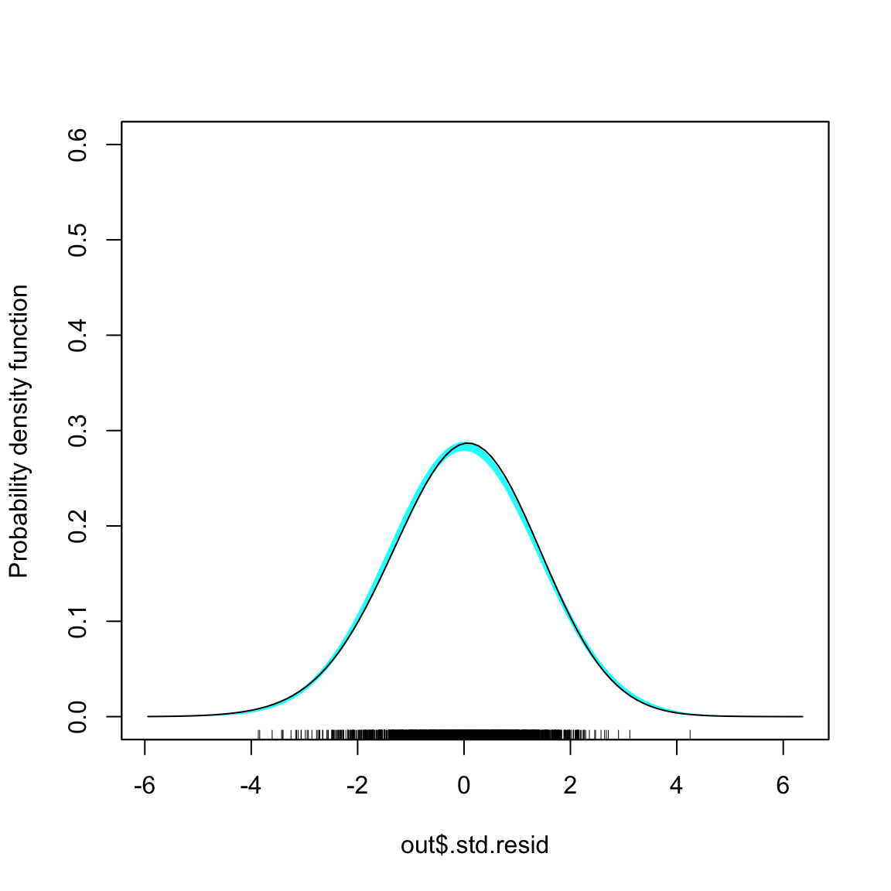
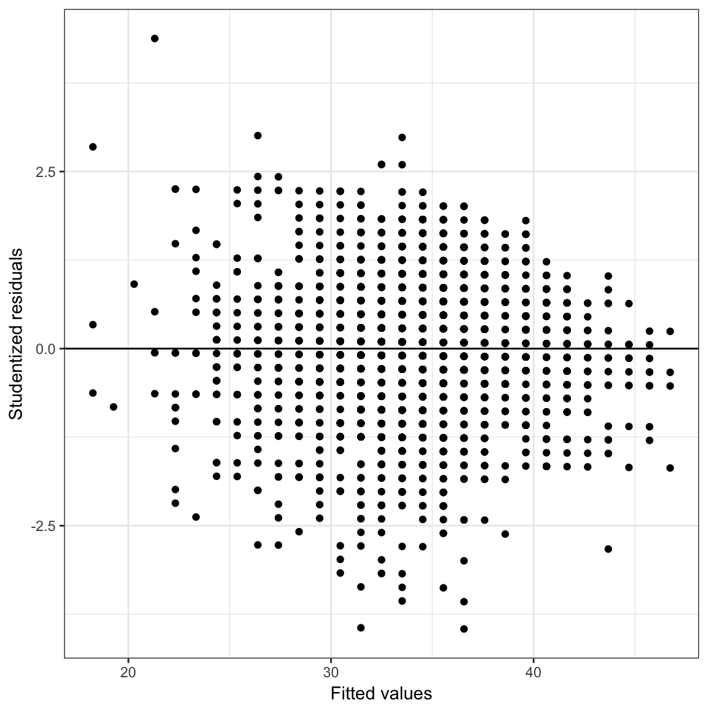

Introduction to Mixed-Effects Models
2018-03-29
Preparation
We will use two datasets in this set of notes. The source of these data is: Snijders & Bosker (2012). We will use these data to explore predictors of students’ language scores.
The file netherlands-level1.csv includes data for \(n_i=2287\) 8th-grade students in the Netherlands. The student-level attributes in the file include:
school_id: The school ID number for each studentlanguage_pre: Language pre-test scorelanguage_post: Language post-test scoreses: Measure of the socio-economic statusverbal_iq: Student’s score on a verbal IQ test. The variable is centered to have a mean of 0.female: Student’s sex (0 = male; 1 = female)minority: Student’s minority status (0 = white; 1 = minority)
The file netherlands-level2.csv includes data for \(n_j=131\) classrooms (1 per school). The classroom-level attributes in the file include:
school_id: The school ID numberschool_type: Indicates whether the school is a public school, a Protestant private school, a Catholic private school, or a non-denominational private schoolschool_ses: School’s average socio-economic statusschool_verbal_iq: School’s average verbal IQ scoreschool_minority: Percentage of students at the school who are minority students
Below we load several R packages and import both datasets.
# Load libraries
library(AICcmodavg)
library(broom)
library(dplyr)
library(ggplot2)
library(lme4) #for fitting mixed-effects models
library(readr)
library(sm)
# Read in student-level data
level_1 = read_csv(file = "~/Dropbox/epsy-8252/data/netherlands-level-1.csv")
head(level_1)## # A tibble: 6 x 8
## student_id school_id language_pre language_post ses verbal_iq female
## <int> <int> <int> <int> <int> <dbl> <int>
## 1 17001 1 36 46 23 3.17 0
## 2 17002 1 36 45 10 2.67 0
## 3 17003 1 33 33 15 -2.33 0
## 4 17004 1 29 46 23 -0.834 0
## 5 17005 1 19 20 10 -3.83 0
## 6 17006 1 22 30 10 -2.33 0
## # ... with 1 more variable: minority <int># Read in team-level data
level_2 = read_csv(file = "~/Dropbox/epsy-8252/data/netherlands-level-2.csv")
head(level_2)## # A tibble: 6 x 5
## school_id school_type school_ses school_verbal_iq school_minority
## <int> <chr> <int> <dbl> <int>
## 1 1 Public 11 -1.51 60
## 2 2 Public 11 -2.83 10
## 3 10 Public 15 -1.33 4
## 4 12 Public 20 -2.40 5
## 5 15 Catholic 18 -0.334 25
## 6 16 Protestant 13 -0.147 0Merge the Student- and School-Level Datasets
Before analyzing the data, we need to merge, or join, the two datasets together. To do this, we will use the left_join() function from the dplyr package. dplyr includes six different join functions. You can read about several different join functions here.
full_data = left_join(level_1, level_2, by = "school_id")
head(full_data)## # A tibble: 6 x 12
## student_id school_id language_pre language_post ses verbal_iq female
## <int> <int> <int> <int> <int> <dbl> <int>
## 1 17001 1 36 46 23 3.17 0
## 2 17002 1 36 45 10 2.67 0
## 3 17003 1 33 33 15 -2.33 0
## 4 17004 1 29 46 23 -0.834 0
## 5 17005 1 19 20 10 -3.83 0
## 6 17006 1 22 30 10 -2.33 0
## # ... with 5 more variables: minority <int>, school_type <chr>,
## # school_ses <int>, school_verbal_iq <dbl>, school_minority <int>Linear Regression: Fixed-Effects
We will start by examining whether there is an effect of verbal IQ scores on language post-test scores. To evaluate this, we might regress the language_pre variable on the verbal_iq variable using the lm() function. The lm() function fits a fixed-effects regression model.
Fit Linear Models
lm.1 = lm(language_pre ~ 1 + verbal_iq, data = full_data)
summary(lm.1)##
## Call:
## lm(formula = language_pre ~ 1 + verbal_iq, data = full_data)
##
## Residuals:
## Min 1Q Median 3Q Max
## -20.5638 -3.4675 0.4362 3.4712 22.6987
##
## Coefficients:
## Estimate Std. Error t value Pr(>|t|)
## (Intercept) 34.19108 0.10867 314.64 <2e-16 ***
## verbal_iq 2.03500 0.05254 38.74 <2e-16 ***
## ---
## Signif. codes: 0 '***' 0.001 '**' 0.01 '*' 0.05 '.' 0.1 ' ' 1
##
## Residual standard error: 5.197 on 2285 degrees of freedom
## Multiple R-squared: 0.3964, Adjusted R-squared: 0.3961
## F-statistic: 1500 on 1 and 2285 DF, p-value: < 2.2e-16Based on the output, there is a statistically significant effect of verbal IQ on language test socres. To have faith in the analytic results from this model, we need to evaluate whether the assumptions are satisfied.
Examine Residuals
# Obtain the fortified data frame
out = augment(lm.1)
head(out)## language_pre verbal_iq .fitted .se.fit .resid .hat
## 1 36 3.1659379 40.63376 0.1986765 -4.633762 0.0014616170
## 2 36 2.6659379 39.61626 0.1772692 -3.616262 0.0011636094
## 3 33 -2.3340621 29.44126 0.1638429 3.558735 0.0009940216
## 4 29 -0.8340621 32.49376 0.1171686 -3.493764 0.0005083502
## 5 19 -3.8340621 26.38877 0.2288678 -7.388766 0.0019395911
## 6 22 -2.3340621 29.44126 0.1638429 -7.441265 0.0009940216
## .sigma .cooksd .std.resid
## 1 5.196955 0.0005827500 -0.8923223
## 2 5.197309 0.0002823899 -0.6962787
## 3 5.197327 0.0002335403 0.6851442
## 4 5.197347 0.0001150013 -0.6724723
## 5 5.195557 0.0019681180 -1.4231933
## 6 5.195526 0.0010210899 -1.4326270# Normality
sm.density(out$.std.resid, model = "normal")
# All other assumptions
ggplot(data = out, aes(x = .fitted, y = .std.resid)) +
geom_point() +
geom_hline(yintercept = 0) +
theme_bw() +
xlab("Fitted values") +
ylab("Studentized residuals")
The assumptions of linearity, normality, and homoscedasticity seem reasonably satisfied. The assumption of independence, however, is probably not tenable. The language scores (and thus the residuals) are probably more correlated within school than between school—this is a violation of independence.
If you have a variable that identifies school, we can actually examine this by plotting the residuals separately for each school. Below are the residual, by school, for a random sample of 25 of the schools.

In general, looking within schools, the residuals are systematically over or under 0. This is a sign of non-independence of the residuals. To account for this we need to use a statistical model that accounts for the correlation among the residuals within schools This is what mixed-effects models bring to the table. By correctly modeling the non-independence, we get more accurate standard errors and p-values.
Another benefit of using mixed-effects models is that we also get estimates of the variation accounted for at both the student- and school-levels. This disaggregating of the variation allows us to see which level is explaining more variation and to study predictors appropriate to explaining that variation. For example, suppose that in an educational study you disaggregated the variation in student achievement scores and found that:
- 96% of the variation in these scores was at the student-level, and
- 4% of the variation in these scores was at the school-level.
By including school-level predictors in the model, you would only be “chipping away” at that 4%. You should focus your attention and resources on student-level predictors!
Conceptual Idea of Mixed-Effects Models
In this section we will outline the conceptual ideas behind mixed-effects models by linking the ideas behind these models to the conventional, fixed-effects regression model. It is important to realize that this is just conceptual in nature. Its purpose is only to help you understand the output you get from a mixed-effects model analysis. It is not how we fit mixed-effects models in practice.
To begin, we remind you of the fitted regression equation we obtained earlier, when we regressed language scores on verbal IQ scores for the \(n=2287\) students:
\[ \hat{\mathrm{Language~Score}_i} = 34.19 + 2.04(\mathrm{Verbal~IQ}_i) \]
Mixed-effects regression actually fits a global model (like the one above) AND a school-specific model for each school. Conceptually, this is like fitting a regression model for each school separately. Below I show the results (for 5 of the schools) of fitting a different regression model to each school, but keep in mind that this is only to help you understand.
| school_id | term | estimate |
|---|---|---|
| 1 | (Intercept) | 39.789130 |
| 1 | verbal_iq | 2.238435 |
| 2 | (Intercept) | 27.350441 |
| 2 | verbal_iq | 1.283019 |
| 10 | (Intercept) | 38.086739 |
| 10 | verbal_iq | 5.761905 |
| 12 | (Intercept) | 36.105947 |
| 12 | verbal_iq | 2.182371 |
| 15 | (Intercept) | 32.113990 |
| 15 | verbal_iq | 3.708861 |
As an example, let’s focus on the fitted model for School 1.
\[ \hat{\mathrm{Language~Score}_i} = 39.79 + 2.24(\mathrm{Verbal~IQ}_i) \]
Comparing this school-specific model to the global model, we find that School 1’s intercept is higher than the intercept from the global model (by 5.65) and it’s slope is also higher than the slope from the global model (by 0.20). We can actually re-write the school-specific model using these ideas:
\[ \hat{\mathrm{Language~Score}_i} = \bigg[34.19 + 5.65\bigg] + \bigg[2.04 + 0.20\bigg](\mathrm{Verbal~IQ}_i) \]
In the language of mixed-effects modeling:
- The global intercept and slope are referred to as fixed-effects.
- The fixed-effect of intercept is \(34.19\); and
- The fixed effect of the slope is \(2.04\).
- The school-specific deviations from the fixed-effect values are referred to as random-effects.
- The random-effect of the intercept for School 1 is \(+5.65\); and
- The random-effect of the slope for School 1 is \(+0.20\).
Note, each school could potentially have a different random-effect for intercept and slope. For example, writing the team-specific fitted equation for School 2 in this manner,
\[ \begin{split} \hat{\mathrm{Language~Score}_i} &= 27.35 + 1.28(\mathrm{Verbal~IQ}_i)\\ &= \bigg[34.19 - 6.84\bigg] + \bigg[2.04 - 0.76\bigg](\mathrm{Verbal~IQ}_i).\\ \end{split} \]
In this model:
- The fixed-effects are the same (global) as they were for School 1.
- The fixed-effect of intercept is \(34.19\); and
- The fixed effect of the slope is \(2.04\).
- The random-effect of intercept for School 2 is \(-6.84\).
- The random-effect of slope for School 2 is \(-0.76\).
–>
–>
–> –> –>
–>
–> –> –>
–>
–>
References
Snijders, T. A. B., & Bosker, R. J. (2012). Multilevel analysis: An introduction to basic and advanced multilevel modeling (2nd ed.). Thousand Oaks, CA: Sage.